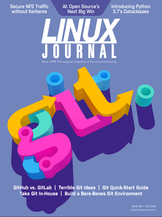

Shutdown Archive web server
Search:
Linux Journal
Issue #288/July 2018

From the Editor—Doc Searls
Advertising 3.0
Letters
Letters to the editor
UPFRONT
Road to RHCA—Preparation Meets Opportunity
by Taz Brown
FOSS Project Spotlight: ONLYOFFICE, an Online Office Suite
by Tatiana Kochedykova
At Rest Encryption
by Kyle Rankin
Progress with Your Image
by Kyle Rankin
Patreon and Linux Journal
FOSS Project Spotlight: Pydio Cells, an Enterprise-Focused File-Sharing Solution
by Italo Vignoli
Atomic Modeling with GAMGI
by Joey Bernard
News Briefs
Columns
Kyle Rankin's Hack and /
What Really IRCs Me: Slack
Reuven M. Lerner's At the Forge
Introducing Python 3.7's Dataclasses
Dave Taylor's Work the Shell
Shuffling Letters and Words
Zack Brown's diff -u
What's New in Kernel Development
Glyn Moody's Open Sauce
Why the Failure to Conquer the Desktop Was Great for GNU/Linux
A Git Origin Story
A look at the Linux kernel developers' various revision control solutions through the years, Linus Torvalds' decision to use BitKeeper and the controversy that followed, and how Git came to be created.
Git Quick Start Guide
Ditch USBs and start using real version control, and if you follow this guide, you can start using git in 30 minutes!
Building a Bare-Bones Git Environment
How to migrate repositories from GitHub, configure the software and get started with hosting Git repositories on your own Linux server.
Take Your Git In-House
If you're wary of the Microsoft takeover of GitHub, or if you've been looking for a way to ween yourself off free public repositories, or if you want to ramp up your DevOps efforts, now's a good time to look at installing and running GitLab yourself. It's not as difficult as you might think, and the free, open-source GitLab CE version provides a lot of flexibility to start from scratch, migrate or graduate to more full-fledged versions.
Terrible Ideas in Git
This article was derived from a talk that GitHub Universe faithfully rejects every year. I can't understand why....
Opinion: GitHub vs GitLab
Free software deserves free tools, not Microsoft-owned GitHub.
Article
Encrypting NFSv4 with Stunnel TLS
by Charles Fisher
Cover
Cover image
Masthead
Masthead
Archive Index
Shutdown Archive web server
Search:
Copyright © 1994 - 2018
Linux Journal
. All rights reserved.


{kind=link}